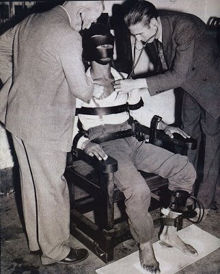

The deceased in the photo seen by Dr. Ray Boeche are not prisoners.

background knowledge
Pentagon team dies of mysterious skull entrapment during channeling experiment with ET (2020-02-28) The information from the DoD scientists relied upon by Nick Redfern and Jacques Vallee is due to a disturbance operation. (2021-02-20)Preface
- The following is a new part of the interview video I am going to discuss. - Ray Boeche speculated that the victim (i.e., the test subject) may have been a prisoner. - In response, Erica Luke said, "I think the prisoner angle is probably a good one, could be."My view
- As usual, Erica Luke is thoughtless. - Since the photo in question was a DoD fabrication in the first place, there is no possibility that the test subjects were prisoners. But even assuming, by a wide margin, that the photo in question is what the DoD scientists claim it is (i.e., not a fabrication), there is no possibility that the test subjects were prisoner. - Because it was the first experiment by a public institution to attempt psychic communication between ETs and humans. Later, when the test subjects were murdered, the DoD scientist came to Ray Boeche for advice, realizing the frightening possibility that IT was not an ET, but a demonic entity. This is the story of how the DoD scientist told Ray Boeche about the incident. - In the first experiment of mental exchange between ETs and humans, there is no way that a criminal would be chosen as the representative of the human side. Since this is an experiment in mental exchange, it is assumed that ETs can read the minds of their opponents. No one in charge of the DoD can tolerate a situation in which ETs can see that humans are evil criminal beings. - There is no way that we would entrust a prisoner of war with such a major role in our mental exchange with ETs. It would be like entrusting an impostor to interpret at a meeting with a foreign dignitary.audio transcript
▼ click to expansion
things i've ever run across 84:10 they 84:13 showed me some photos 84:14 of experiments experimental 84:18 participants 84:20 in this 84:20 uh two men and a woman who had been 84:23 killed allegedly at a distance 84:26 uh in a laboratory setting 84:29 the they were all three were in what 84:31 appeared to be the same dentist's chair 84:33 very dentist-like chair 84:35 uh 84:36 monitoring equipment in the background 84:39 uh one had allegedly been 84:42 suffocated one had been killed by 84:45 a distance induced heart attack 84:48 and the other had been killed by having 84:51 the occipital area of their skull 84:52 crushed 84:53 at a distance 84:54 wow 84:57 was not explained to me 84:59 whether these were volunteers whether 85:01 they were prisoners 85:03 no idea 85:04 um 85:06 i think the prisoner angle is probably a 85:08 good one 85:09 could be 85:10 could be 85:13 one of the last things that they said 85:16 was because they knew about my work with 85:19 the whole rental ship forest bentwaters 85:21 incident 85:22 was that that was part of this 85:24 program and that the object that was 85:26 seen 85:28 at bentwaters 85:29 uh in rendelsham forest 85:31 was 85:33 a holographic projection 85:35 that was 85:36 capable of leaving physical traces 85:40 wow 85:41 and that 85:44 some of the people who were present 85:46 during that were more interested in the 85:47 reaction of the servicemen 85:50 than they were in the events 85:54 um 85:56 and that's where that's kind of where we 85:57 left it we we were in con i had two one 86:00 other face-to-face meeting 86:02 uh another instance where they just 86:04 handed a disc back to me a floppy disk 86:07 um 86:09 with some information for linda howe 86:12 um 86:15 but essentially that was that was it if 86:17 if anyone's interested you can go to 86:19 academia.edu 86:21 and you'll find uh the entire 86:24 story of what took place 86:28 as well as the 86:31 conversations if you will 86:33 between linda howe and these two 86:36 gentlemen that she termed the writers 86:39 um 86:41 it's it's fascinating stuff 86:43 i still to this day i mean i 86:46 when i first 86:47 made mention of this publicly 86:51 i said i don't i don't know that i i 86:53 have no way to judge whether this is 86:55 true false 86:56 i i don't know it's it's a fantastic 86:59 story 87:00 but 87:01 these two guys are who they say they are 87:06 the reason they came to me was because 87:09 of my background in 87:12 ufo and paranormal research 87:15 and my 87:16 training as a theologian and a pastor 87:19 so 87:23 they felt comfortable talking to me they 87:25 said because 87:26 they knew they could ask me to invoke 87:28 the sanctity of the confessional 87:31 and not 87:32 not reveal who they are 87:35 um 87:37 and i 87:37 agree to that 87:39 um 87:41 again i don't 87:43 i still can't vouch for the accuracy of 87:46 it 87:47 but 87:48 the interesting thing when nick redfern 87:50 ran across 87:51 this research 87:53 in 2007 i believe got a hold of me 87:57 he was able to dig down and he was able 87:59 to actually confirm 88:01 the majority of what i was told 88:04 so that makes me 88:06 that takes me another step closer to 88:08 saying yeah there's something going on 88:10 here 88:11 um 88:12 i never heard the term collins elite 88:14 they never used that term 88:16 uh the first time i encountered that was 88:19 from nick when he told me about his 88:21 research 88:22 um 88:23 i believe they're 88:27 i believe they're probably still active 88:29 not necessarily the two the gentleman 88:30 that spoke with me 88:32 uh but this group 88:35 i think 88:38 i think lou elizondo 88:40 has at least in a roundabout way 88:43 referenced this group when he's talked 88:46 about the 88:47 forces at the pentagon right that say 88:49 you can't deal with this because these 88:50 are demonsVideo (2:07:19)
UFO Classified | Ray Boeche (2022-01-05)
Thanks
Translated with www.DeepL.com/Translator (free version)
(2022-07-25 translate)
First published article (Japanese)
Dr. Ray Boeche : DoD の科学者から見せられた被害者の写真の詳細 (2022-01-05)